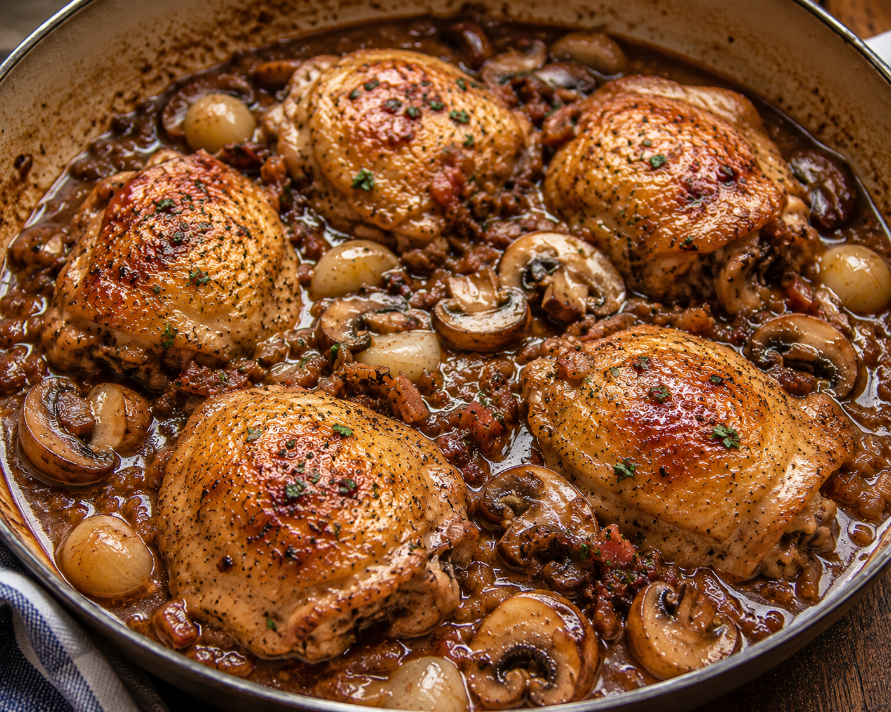

Home
Sherried Chicken

Description
Sherried chicken is tender chicken cooked in a rich sauce made with dry sherry, cream, mushrooms, garlic, and herbs. It has a creamy, savory flavor with a subtle sweetness from the sherry.
Ingredients
- 8 chicken leg pieces
- 75g butter
- 125g mushrooms
- 25ml flour
- 250ml chicken stock
- 25ml sherry
- 50ml yoghurt
- Green olives
- Salt and pepper
Steps
- Season chicken well with salt and pepper and fry in butter for approximately 25-30 minutes until cooked through.
- Remove from the pan and immediately arrange in a serving dish and keep warm.
- Add flour and gradually stir in the chicken stock and sherry.
- Cook until thickened then add yoghurt.
- Pour over chicken.
- Garnish with green olives.
- Serve immediately with sides of your choice.